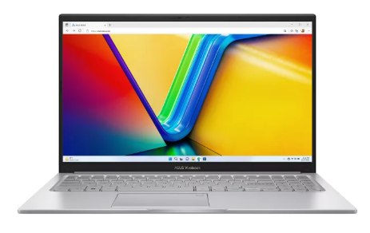
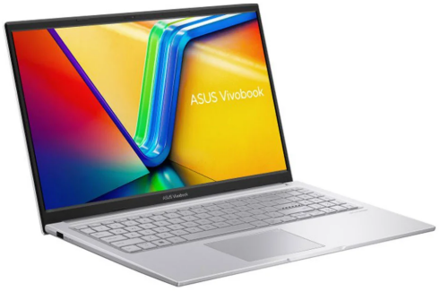

پردازنده اصلی: intel Core i7 1355U
حافظه رم: 16 گیگابایت DDR4
حافظه داخلی: 512 گیگابایت SSD
حافظه پردازنده گرافیکی: Onboard
پردازنده گرافیکی: intel Iris Xe
اندازه صفحه نمایش: 15.6 اینچ
رزولوشن: 1920×1080
وزن: 1.7 کیلوگرم
ظرفیت باتری: 42 وات ساعت
لپتاپ ویووبوک برند ایسوس به عنوان یکی از برترین و قدرتمندترین برندهای موجود در بازار به حساب میآیند که در
سری مختلف با کارایی منحصربهفردی ارائه میشوند. اگر به دنبال لپتاپی برای کارهای گرافیکی ساده و پردازنده قوی
مقرونبهصرفه هستید، لپ تاپ ایسوس Vivobook F1504va انتخابی ایدهآل محسوب میشود. این دستگاه با وزن 1.70 کیلوگرمی
طراحی شده است تا بتوانید به آسانی در محل کار و کلاسهای درسی با خود حمل کنید.
رنگ نقرهای و اندازه صفحه نمایش 15.6 اینچی این دستگاه باعث شده است که گزینهای عالی و شیک برای تمام افراد در
سنین مختلف باشد. بد نیست بدانید که با وجود پردازنده قدرتمند intel Core i7 1355U دستگاه به گونهای طراحی شده است
که ظرافت را به بیننده القا کرده و حس زیبایی در کنار رزولوشن بالا و کارایی منحصربهفرد ارائه دهد.
در صورتی که شغل شما وابسته به لپتاپ بوده و دسترسی کمتری به پریز برق دارید، توصیه میشود که لپ تاپ ایسوس
Vivobook F1504va را خریداری کنید؛ چرا که ظرفیت بالای این دستگاه (42 وات بر ساعت) شرایطی را فراهم کرده است که
بتوانید نزدیک به 8 ساعت بدون نیاز به شارژ مجدد از لپتاپ خود استفاده کنید.
یکی از مزیتهای منحصربهفردی که این دستگاه ارائه میدهد پشتیبانی از شارژ سریع است که امکان شارژ صفر تا شصت درصد
را در 49 دقیقه فراهم میکند.
آیا به دنبال لپتاپی شیک و منحصربهفرد هستید که بتوانید در محل کار خود بیشترین بهرهوری را از آن داشته باشید؟
لپ تاپ ایسوس Vivobook F1504va با صفحه نمایش 15.6 و وزن 1.7 کیلوگرمی خود به عنوان یک دستگاه خوشساخت شناخته
میشود. افزون بر این کیبورد این دستگاه دارای نور پس زمینه است و برای برنامهنویسانی که علاقهمند به کدزنی در شب
هستند گزینهای مناسب محسوب میشود.
همچنین حسگر اثر انگشت در این دستگاه قرار داده شده و امنیت دستگاه را افزایش داده است. پورتهایی که در این دستگاه
تعبیه شدهاند عبارتند از: پورت USB Type-C، USB 3.2، USB 2.0، پورت HDMI و جک هدفون 3.5 میلیمتری.
| مشخصات فیزیکی | پردازنده مرکزی | حافظه RAM | حافظه داخلی | صفحه نمایش | باتری | |||||||||
|---|---|---|---|---|---|---|---|---|---|---|---|---|---|---|
| ابعاد | سازنده پردازنده | سری پردازنده | مدل پردازنده | فرکانس پردازنده | ظرفیت حافظه رم | نوع حافظه رم | ظرفیت حافظه داخلی | نوع حافظه داخلی | اندازه صفحه نمایش | نوع صفحه نمایش | دقت صفحه نمایش | صفحه نمایش مات | صفحه نمایش لمسی | توضیحات باتری |
| 35.97×23.25×1.79 سانتی متر | intel | Core i7 | 1355U | 1.7 تا 5.0 گیگاهرتز | 16 گیگابایت | DDR4 | 512 گیگابایت | SSD | 15.6 اینچ | OLED | FHD 1920 x 1080 | بله | خیر | 42Wh |